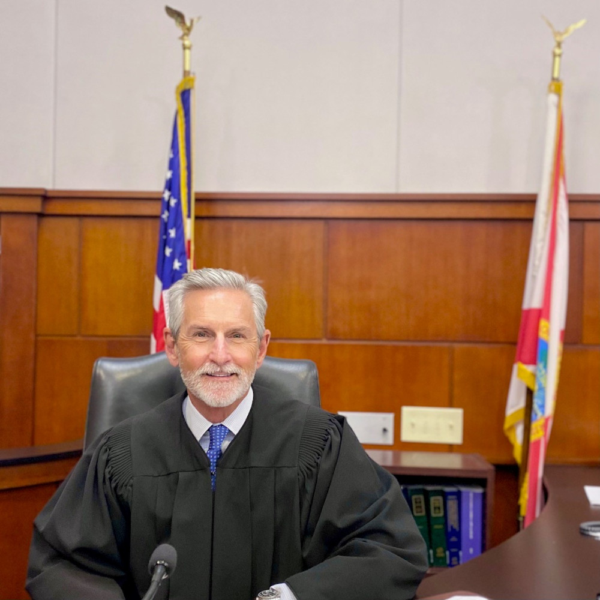

Charles Tinlin
The honorable Judge Charles Tinlin (Retired) served as County Court Judge for St. Johns County and as the Chairman of the Board of Directors of the St. Augustine YMCA, has been on the Board of Directors for the St. Augustine Rotary, and is currently on the Board of Trustees of Flagler College.